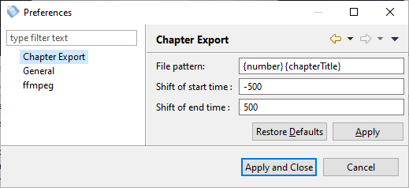

MP4 Spliterator
Getting Started
Prerequisites
You need at least an installed Java 8 or above to run the code. You can download it from java.com.
Installing
Just download the last release and extract it in a folder of your choice, then double click the EXE file.
One of the first things the application does is to download ffmpeg. You can speed up this progress by downloading it yourself and entering the location of the downloaded file in the init wizard.
Split MP4 Into Chapters

Splitting an MP4 into chapters is an easy process which can be done in very little clicks:
- 1st a) Double click on a video in the
 Video Folder.
Video Folder. - 1st b) Or open a video directly via the menu File →
 Open Video.
Open Video. - 2nd The video will be opened in a separate section where you can check and uncheck the chapters.
- 3rd Click and choose a folder. The chapters will be exported into this folder.
Merge and Split Chapters
If you want to export one or more chapters into a single file, you can use the button
 Merge chapters.
Merge chapters.
The merged chapters are then displayed together in a group:

To revert this process you can use the button  Split chapters.
Split chapters.
Note: To select multiple videos at once use Shift (contiguous selection) or CTRL (selection of separate elements).
Preferences
You can customize the chapter export via .

The following settings can be changed:
- File pattern - the pattern for the exported chapter files; uses the following place holders
- {number} - a running number in the order of the chapters
- {chapterTitle} - the title of the chapter
- Shift of start time - if not zero, this value changes the start time of a chapter; i.e. a value of -500 means the chapter is split 500ms before the chapter's actual start time
- Shift of end time - if not zero, this value changes the end time of a chapter; i.e. a value of 700 means the chapter is split 700ms after the chapter's actual end time